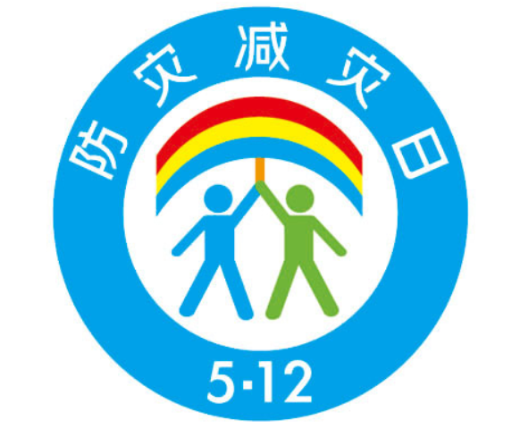

5.12防灾减灾日，这些应急知识不容错过
2008年5月12日，一场有着巨大破坏力的地震在四川汶川发生，造成重大人员伤亡和财产损失。为进一步增强全民防灾减灾意识，推动提高防灾减灾救灾工作水平，经国务院批准，从2009年开始，每年的5月12日定为“全国防灾减灾日”，一方面顺应社会各界对中国防灾减灾关注的诉求，另一方面提醒国民前事不忘、后事之师，更加重视防灾减灾，努力减少灾害损失。
防灾减灾日的图标以彩虹、伞、人为基本元素，雨后天晴的彩虹韵意着美好、未来和希望，伞的弧形形象代表着保护、呵护之意，两个人代表着一男一女、一老一少，两人相握之手与下面的两个人的腿共同构成一个“众”字，寓意大家携手，众志成城，共同防灾减灾。整个标识体现出积极向上的思想和保障人民群众生命财产安全之意。

2020年5月12日是中国第12个全国防灾减灾日，主题是“提升基层应急能力，筑牢防灾减灾救灾的人民防线”。
消防安全
1、火灾发生后，应立即拨打119，报告失火地点的详细位置，燃烧的物质，火势大小，报警人姓名、单位、电话号码等情况，并派人到路口迎接消防车的到来。
2、 当发现液化石油气起火时，迅速用湿布包手后，迅速关好气瓶的阀门，然后再用灭火器材进行灭火。
3、 身上的衣服着火应该尽快脱下着火的衣服扑灭火或就地翻滚把火压灭。
4、 油锅着火后，应迅速用锅盖盖住油锅，窒息熄灭或把将要炒的青菜倒入油锅，覆盖至熄灭。
5、 在陌生的环境时，如宾馆、商场、娱乐场所等，一定要留心疏散通道，安全出口及楼梯方位，以便关键时候能尽快逃离现场。
6、 为了防止火场浓烟烫伤呼吸道，可采用毛巾、口罩蒙鼻。
7、在高层建筑中，火灾发生后期，住在上层的住户尽量不走电梯逃生。
8、 假如用手摸房门，已感到烫手。当逃生通道被切断，且短时间无人救援，这时候，可用湿布塞堵门缝，或用水浸湿棉被蒙上门窗，然后不停用水洒透房间，防止烟火渗入。
9、 被烟火围困，应尽量停留在阳台或窗户等易于被人发现处。白天，可以向窗外晃动鲜艳衣服，或抛轻型、引人注目的东西。晚上，则可用手电筒，不停的在窗户外闪动，或敲击东西，及时发出有效的求救信号，引起救援者的注意。
10、扑救气体火灾，切忌盲目扑灭火势，在没有采取堵漏措施的情况下必须保持稳定燃烧。
防煤气中毒
1、 立即使病人脱离中毒环境，开窗通风并注意为病人保暖。
2、病人需安静休息，尽量减少心肺负担和耗氧量，要让有自主呼吸能力的病人充分吸入氧气。
3、 对呼吸心跳停止的病人，应立即采取心肺复苏法，同时拨打急救电话。
4、 如条件允许尽可能将病人送到有高压氧舱的医院，使病人尽早接受高压氧舱治疗，以减少后遗症。
防地震
工厂地震时自救
紧急避震：采取自我保护措施，确保人身安全；
切断危险源：紧急关闭一切生产设施；
设定隔离区：组织力量对现场进行隔离、警戒；
佩戴个人防护用品：应急人员应佩戴个人防护用品进入隔离区，实时监测空气中有毒物质的浓度；
紧急疏散：转移隔离区内所有无关人员到安全场所；
开展抢险工作：组织抢险救灾队伍、运输车辆、生命探测仪、照明设施、气体检测仪、防毒器具及各类
抢险、救灾、救护、救生器材；及时开展抢险工作，并全力搜寻和抢救伤员；必要时请求地方政府、部队
和社会团体参与营救；
控制泄漏源：以控制泄漏源，防止次生灾害发生为处置原则，实施堵漏、回收或处理泄漏物质；
后勤保障：确保应急救援人员和被疏散人员的生活后勤保障。
高楼里地震时自救
远离高层楼的窗户：地震时，高层楼面向马路的那面墙很不稳定，高层楼的窗户更要远离。现在的楼一般都是框架式结构，砖起到的作用是隔风隔雨，但不承重。地震时，常常是框架在，墙没了，如果人躲在窗户下，很容易被甩出去。
千万不能坐电梯：地震发生时，千万不能使用电梯。一旦断电，上不来下不去就卡在里面出不来了。万一在搭乘电梯时遇到地震，可将操作盘上各楼层的按钮全部按下，一旦停下，迅速离开电梯，确认安全后避难。
往哪儿跑要看情况：地震发生后，一定要往下跑吗？答案是不一定。尤其是住在高楼层的住户而言，往哪儿跑的原则应该是就近——离地面近就往地面跑，离楼顶近就往楼顶跑，总之，“见天见地”都能够和外界接触，相对更安全。
确认逃生通道还是过火通道：逃生时，一定要走逃生通道。高楼本身就是拔火罐，现在的高楼在设计时，有的设计了专门的过火通道，是用于疏通火情的，千万要分清楚。
逃生绳使用分人群：有的家庭备有逃生设备，比如速降绳，使用时一定要在一轮地震波结束后的平静期。提醒您的是，使用速降绳的人一定是经过训练的，速降过程中需要脚的借力支撑，否则跟跳楼没什么区别，只是多了根绳而已。
卧室里地震时自救
千万别钻床底下：地震后房屋倒塌有时会在室内形成三角空间，这些地方是人们得以幸存的相对安全地点，可称其为避震空间，它包括床沿下、坚固家具下、内墙墙根、墙角等开间小的地方。以前人们认为钻到床底下最安全，但床底下能躲不能逃，并非最佳的躲藏之处。
躲开头上悬挂物：要选择上面没有悬挂物，附近没有电源插头的地方，以防上面的悬挂物落下砸伤及电源线着火引发的次生灾害。
衣柜绝不允许进去：唐山地震时，有人钻进衣柜躲藏，几天后救援队发现时，人是完好的，但最后憋死了。
把门打开：躲藏地点离门近点，门最好打开，可以背靠在门框上，手抱头，待地震结束时准备随时转移，为逃生准备活路。
防洪防汛
山洪：是指山区溪沟中发生的暴涨洪水。山洪具有突发性，水量集中流速大、冲刷破坏力强，水流中挟带泥沙甚至石块等，常造成局部性洪灾，一般分为暴雨山洪、融雪山洪、冰川山洪等。
自救措施：
1、受到洪水威胁时，应该有组织地迅速向山坡、高地处转移。
2、当突然遭遇山洪袭击时，要沉着冷静，千万不要慌张，并以最快的速度撤离。脱离现场时，应该选择就近安全的路线沿山坡横向跑开，千万不要顺山坡往下或沿山谷出口往下游跑。
3、山洪流速急，涨得快，不要轻易游水转移，以防止被山洪冲走。山洪爆发时还要注意防止山体滑坡、滚石、泥石流的伤害。
4、突遭洪水围困于基础较牢固的高岗、台地或坚固的住宅楼房时，在山丘环境下，无论是孤身一人还是多人，只要有序固守等待救援或等待陡涨陡落的山洪消退后即可解围。
5、如措手不及，被洪水围困于低洼处的溪岸、土坎或木结构的住房里，情况危急时，有通信条件的，可利用通讯工具向当地政府和防汛部门报告洪水态势和受困情况，寻求救援；无通信条件的，可制造烟火或来回挥动颜色鲜艳的衣物或集体同声呼救。同时要尽可能利用船只、木排、门板、木床等漂流物，做水上转移。
6、发现高压线铁塔歪斜、电线低垂或者拆断，要远离避险，不可触摸或者接近，防止触电。
7、洪水过后，要做好卫生防疫工作，注意饮用水卫生，食品卫生，避免发生传染病。
滑坡：是滑坡是指斜坡上的土体或者岩体，受河流冲刷、地下水活动、雨水浸泡、地震及人工切坡等因素影响，在重力作用下，沿着一定的软弱面或者软弱带，整体地或者分散地顺坡向下滑动的自然现象。运动的岩（土）体称为变位体或滑移体，未移动的下伏岩（土）体称为滑床。
自救措施：当处在滑坡体上时，首先应保持冷静，不能慌乱。要迅速环顾四周，向较安全的地段撤离。一般除高速滑坡外，只要行动迅速，都有可能逃离危险区段。跑离时，向两侧跑为最佳方向。在向下滑动的山坡中，向上或向下跑都是很危险的。当遇无法跑离的高速滑坡时，更不能慌乱，在一定条件下，如滑坡呈整体滑动时，原地不动，或抱住大树等物，不失为一种有效的自救措施。
泥石流：泥石流是指在山区或者其他沟谷深壑，地形险峻的地区，因为暴雨、暴雪或其他自然灾害引发的山体滑坡并携带有大量泥沙以及石块的特殊洪流。泥石流具有突然性以及流速快，流量大，物质容量大和破坏力强等特点。发生泥石流常常会冲毁公路铁路等交通设施甚至村镇等，造成巨大损失。
自救措施：发现有泥石流迹象，应立即观察地形，向沟谷两侧山坡或高地跑；逃生时，要抛弃一切影响奔跑速度的物品；不要躲在有滚石和大量堆积物的陡峭山坡下面；不要停留在低洼的地方，也不要攀爬到树上躲避。
防台风
1、密切关注当地天气信息，在接到台风预报时立即部署防台措施。
2、台风来临前，应准备好手电筒、食物、饮用水及常用药品等，并通过各种媒介及时了解台风动态。关好门窗，进行检查并加固；取下悬挂的东西；检查电路、炉火、煤气等设施是否安全。将养在室外的动植物及其他物品移至室内，特别是要将楼顶的杂物搬进室内；室外易被吹动的东西要加固。
3、台风来临时，最好留在安全的室内。假如是在室外，应尽快回到安全牢靠的房子里，并在路上注意高空坠落的物体，如树木、花盆、广告牌等，远离有幕墙或是正在施工的高楼。
4、 及时清理排水管道，保持排水畅通；不要在河、湖、海的路堤或桥上行走，不要在强风影响区域开车。
5、 台风带来的暴雨还容易引发洪水、山体滑坡、泥石流等自然灾害，发现危险征兆应及早转移。
防雷击
雷击是自然灾害的一种，具有巨大的破坏性和极大的危害性上，对建筑物、电子通讯设备、机械设备、电力设施以及对生命构成巨大的威胁。雷击发生时往往会造成人员伤亡、失火、财产损失等，春、夏两季最易发生。
1、人在室内怎么避雷：雷雨天气时，要注意关好门窗，以防侧击雷和球状雷侵入；雷雨天气时，最好把家用电器的电源切断，并拔掉电源插头；不要使用带有外接天线的收音机和电视机；不要接打固定电话；雷雨天气时，不要接触天线、煤气管道、铁丝网、金属窗、建筑物外墙等；远离带电设备；不要赤脚站在泥地或水泥地上；不要在雷电交加时用喷头洗澡。
2、 人在户外怎么避雷：人在户外碰到雷雨天气，为防止被雷击，应遵守以下原则：立即寻找避雷场所，可选择装有避雷针、钢架或钢筋混凝土的建筑物等场所，但应注意不要靠近防雷装置的任何部分；若找不到合适的避雷场所，可以蹲下，两脚并拢，双手抱膝，尽量降低身体重心，减少人体与地面的接触面积。
森林火灾
1、 发现森林火灾，应及时拨打报警电话，报告起火方位、面积及燃烧的植被种类。身处火场时，要判明火势大小、风向，用湿衣服包住头，逆风逃生。
2、如果被大火包围，要迅速向植被稀少、地形平坦开阔地段转移。如果被大火包围在半山腰，要往山下跑。
3、当无法脱险时要选择植被少的地方卧倒，扒开浮土直到见着湿土，把脸贴进坑底，用衣服包住头，双手放在身体下面避开火头。
防化学品
1、 发现被遗弃的化学品，不要捡拾，应立即拨打报警电话，说清具体位置、包装标志、大致数量以及是否有气味等情况。
2、 立即在事发地点周围设置警告标志，不要在周围逗留。严禁吸烟，以防发生火灾或爆炸。
3、遇到危险化学品运输车辆发生事故，应迅速离开事故现场，撤离到上风口位置，并立即拨打报警电话。其他机动车驾驶员要听从工作人员的指挥，有序地通过事故现场。
4、 居民小区施工过程中挖掘出有异味的土壤时，应立即拨打当地区（县）值班电话说明情况，同时在其周围拉上警戒线或竖立警示标志。在异味土壤清走之前，周围居民和单位不要开窗通风。
5、 当化学事故发生时，首先应想到使用就便器材进行自我保护，如可用湿毛巾、湿手巾、湿口罩等就便器材保护呼吸道，其次可用雨衣、手套、雨靴等保护皮肤。
原文编辑: EHS资讯
原文链接: https://ehsinfo.cn/2020/05/11/防灾减灾日.html
版权声明: 转载请注明出处(必须保留作者署名及链接)